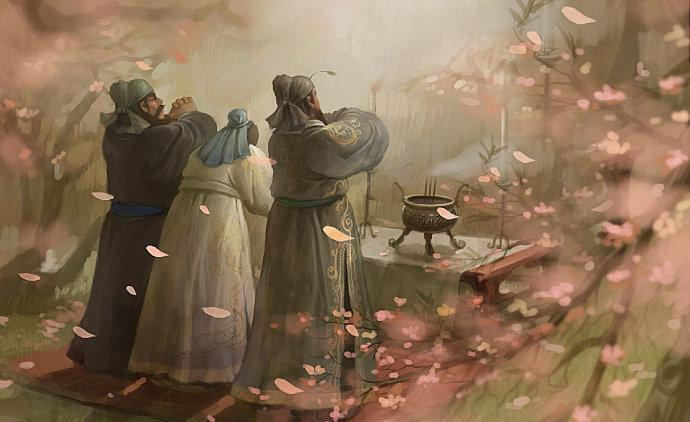

四大名著英译
Translation of Four Chinese Literature Classics
四大名著英译
Translation of Four Chinese Literature Classics
第一回(选段) 宴桃园豪杰三结义 斩黄巾英雄首立功
Chapter 1 (Selection) Three Bold Spirits Plight Mutual Faith in the Peach Garden Heroes and Champions Win First Honors Fighting the Yellow Scarves

话说天下大势，分久必合，合久必分：周末七国分争，并人于秦；及秦灭之后，楚、汉分争，又并入于汉；
Here begins our tale. The empire, long divided, must unite； long united, must divide. Thus it has ever been.
In the closing years of the Zhou dynasty, seven kingdoms warred among themselves until the kingdom of Qin prevailed and absorbed the other six.
But Qin soon fell, and on its ruins two opposing kingdoms, Chu and Han, fought for mastery until the kingdom of Han prevailed and absorbed its rival, as Qin had done before.
汉朝自高祖斩白蛇而起义，一统天下，后来光武中兴，传至献帝，遂分为三国。
The Han court’s rise to power began when the Supreme Ancestor slew a white serpent, inspiring an uprising that ended with Han’s ruling a unified empire.
Two hundred years later, after Wang Mang’s usurpation (/juːzɜːˈpeɪʃn/), Emperor Guang Wu restored the dynasty, and Han emperors ruled for another two hundred years down to the reign of Xian, after whom the realm split into three kingdoms.
推其致乱之由，殆始于桓、灵二帝。桓帝禁锢善类，崇信宦官。
The cause of Han’s fall may be traced to the reigns of Xian’s two predecessors, Huan and Ling.
Huan drove from office and persecuted officials of integrity and ability, giving all his trust to his eunuchs (/ˈjuːnək/).
及桓帝崩，灵帝即位，大将军窦武、太傅陈蕃，共相辅佐；时有宦官曹节等弄权，窦武、陈蕃谋诛之，机事不密，反为所害，中涓自此愈横。
After Ling succeeded Huan as emperor, Regent-Marshal Dou Wu and Imperial Guardian Chen Fan, joint sustainers of the throne,
planned to execute the power-abusing eunuch Cao Jie and his cohorts (/ˈkəʊhɔːt/). But the plot came to light, and Dou Wu and Chen Fan were themselves put to deach. From them on, the Minions of the Palace knew no restraint.
建宁二年四月望日，帝御温德殿。方升座，殿角狂风骤起，只见一条大青蛇，从梁上飞将下来，蟠于椅上。帝惊倒，左右急救入宫，百官俱奔避。
On the fifteenth day of the fourth month of the second year of the reign Established Calm (Jian Ning), the Emperor arrived at the Great Hall of Benign Virtue for the full-moon ancestral rites. As he was about to seat himself, a strong wind began issuing out of a comer of the hall. From the same direction a green serpent appeared, slid down off a beam, and coiled itself on the throne.
The Emperor fainted and was rushed to his private chambers. The assembled officials fled.
须臾，蛇不见了。忽然大雷大雨，加以冰雹，落到半夜方止，坏却房屋无数。
The next moment the serpent vanished, and a sudden thunderstorm broke. Rain laced with hailstones pelted down for half the night, wrecking countless buildings.
建宁四年二月，洛阳地震；又海水泛溢，沿海居民，尽被大浪卷入海中。光和元年，雌鸡化雄。
In the second month of the fourth year of Established Calm an earthquake struck Luoyang, the capital, and tidal waves swept coastal dwellers out to sea.
In the first year of Radiant Harmony (Guang He) hens were transformed into roosters.
六月朔，黑气十余丈，飞入温德殿中。秋七月，有虹现于玉堂，五原山岸，尽皆崩裂。种种不祥，非止一端。
And on the first day of the sixth month a murky cloud more than one hundred spans in length floated into the Great Hall of Benign Virtue.
The next month a secondary rainbow was observed in the Chamber of the Consorts. Finally, a part of the cliffs of the Yuan Mountains plunged to earth.
All these evil portents, and more, appeared—too many to be dismissed as isolated signs.
帝下诏问群臣以灾异之由，议郎蔡邕（yōng）上疏，以为蜺（ní）堕鸡化，乃妇寺干政之所致，言颇切直。帝览奏叹息，因起更衣。
Emperor Ling called on his officials to explain these disasters and omens. A court counselor, Cai Yong,
argued bluntly that the secondary rainbow and the transformation of the hens were the result of interference in government by empresses and eunuchs. The Emperor merely read the report, sighed, and withdrew.
曹节在后窃视，悉宣告左右；遂以他事陷邕于罪，放归田里。后张让、赵忠、封谞（xū）、段珪（guī）、曹节、侯览、蹇（jiǎn）硕、程旷、夏样、郭胜十人朋比为奸，号为“十常侍”。
The eunuch Cao Jie observed this session unseen and informed his associates. They framed Cai Yong in another matter, and dismissed from office, he retired to his village.
After that a vicious gang of eunuchs known as the Ten Regular Attendants — Zhang Rang, Zhao Zhong, Feng Xu, Duan Gui, Cao Jie, Hou Lan, Jian Shuo, Cheng Kuang, Xia Yun, and Guo Sheng—took charge.
帝尊信张让，呼为“阿父”。朝政日非，以致天下人心思乱，盗贼蜂起。
Zhang Rang gained the confidence of the Emperor, who called him “Nuncle”. Court administration became so corrupt that across the land men’s thoughts turned to rebellion,
and outlaws swarmed like hornets (/ˈhɔːnɪt/).
时巨鹿郡有兄弟三人：一名张角，一名张宝，一名张梁。那张角本是个不第秀才，因入山采药，遇一老人，碧眼童颜，手执藜杖，唤角至一洞中，以天书三卷授之，曰：
One rebel group, the Yellow Scarves, was organized by three brothers from the Julu district — Zhang Jue, Zhang Bao, and Zhang Liang.
Zhang Jue had failed the official provincial-level examination and repaired to the hills where he gathered medicinal herbs. One day he met an ancient mystic, emerald-eyed and with a youthful face, gripping a staff of goosefoot wood.
The old man summoned Zhang Jue into a cave where he placed in his hands a sacred book in three volumes.
“此名《太平要术》。汝得之，当代天宣化，普救世人。若萌异心，必获恶报。”
“Here is the Essential Arts for the Millennium”, he said. “Now that you have it, spread its teachings far and
wide as Heaven’s messenger for the salvation of our age. But think no seditious thoughts, or retribution will follow.”
角拜问姓名。老人曰：“吾乃南华老仙也。”言讫，化阵清风而去。
Zhang Jue asked the old man’s name, and he replied, “The Old Hermit From Mount Hua Summit ——Zhuang Zi, the Taoist sage.” Then he changed into a puff of pure breeze and was gone.
角得此书，晓夜攻习，能呼风唤雨，号为“太平道人”。中平元年正月内，疫气流行，张角散施符水，为人治病，自称“大贤良师”。
Zhang Jue applied himself to the text day and night. By acquiring such arts as summoning the wind and invoking the rain, he became known as the Master of the Millennium. During the first month of the first year of the reign Central Stability (Zhong Ping), a pestilence (/ˈpestɪləns/) spread through the land.
Styling himself Great and Worthy Teacher, Zhang Jue distributed charms and potions to the afflicted.
角有徒弟五百余人，云游四方，皆能书符念咒。次后徒众日多，角乃立三十六方，大方万余人，小方六七千，各立渠帅，称为将军；
He had more than five hundred followers, each of whom could write the charms and recite the spells. They traveled widely,
and wherever they passed, new recruits joined until Zhang Jue had established thirty-six commands—ranging in size from six or seven thousand to over ten thousand—under thirty-six chieftains titled general or commander.
讹言：“苍天已死，黄天当立；岁在甲子，天下大吉。”
A seditious song began to circulate at this time:
The pale sky is on the wane,
Next, a yellow one shall reign;
The calendar’s rotation
Spells fortune for the nation.
令人各以白土，书“甲子”二字于家中大门上。青、幽、徐、冀、荆、扬、兖（yǎn）、豫八州之人，家家侍奉大贤良师张角名字。
Jue ordered the words “new cycle” chalked on the front gate of every house, and soon the name Zhang Jue,
Great and Worthy Teacher, was hailed throughout the eight provinces of the realm― Qingzhou, Youzhou, Xuzhou, Jizhou, Jingzhou, Yangzhou, Yanzhou, and Yuzhou.
角遣其党马元义，暗赍（jī）金帛，结交中涓封谞，以为内应。
角与二弟商议曰：“至难得者，民心也。今民心已顺，若不乘势取天下，诚为可惜。”
At this point Zhang Jue had his trusted follower Ma Yuanyi bribe the eunuch Feng Xu to work inside the court on behalf of the rebels. Then Zhang Jue made a proposal to his two brothers: “Popular support is the hardest thing to win.
Today the people favor us. Why waste this chance to seize the realm for ourselves?”
遂一面私造黄旗，约期举事；一面使弟子唐周，驰书报封谞。唐周乃径赴省中告变。帝召大将军何进调兵擒马元义，斩之；次收封谞等一干人下狱。
Zhang Jue had yellow banners made ready, fixed the date for the uprising, and sent one of his followers, Tang Zhou, to inform the agent at court, the eunuch Feng Xu. Instead, Tang Zhou reported the imminent insurrection to the palace.
The Emperor summoned Regent He Jin to arrest and behead Ma Yuanyi. This done, Feng Xu and his group were seized and jailed.
张角闻知事露，星夜举兵，自称“天公将军”，张宝称“地公将军”，张梁称“人公将军”；
申言于众曰：“今汉运将终，大圣人出。汝等皆宜顺天从正，以乐太平。”
His plot exposed, Zhang Jue mustered his forces in great haste. Titling himself General of Heaven, his first brother General of the Earth, and his second brother General of Men, he addressed his massed followers: “Han’s fated end is near. A new sage is due to appear.
Let one and all obey Heaven and follow the true cause so that we may rejoice in the millennium.”
四方百姓，裹黄巾从张角反者四五十万。贼势浩大，官军望风而靡。
何进奏帝火速降诏，令各处备御，讨贼立功；一面遣中郎将卢植、皇甫嵩、朱㑺，各引精兵，分三路讨之。
From the four comers of the realm the common folk, nearly half a million strong, bound their heads with yellow scarves and followed Zhang Jue in rebellion,
gathering such force that the government troops scattered on the rumor of their approach.
Regent-Marshal He Jin appealed to the Emperor to order every district to defend itself and
every warrior to render distinguished service in putting down the uprising. Meanwhile,
the regent also gave three Imperial Corps commanders一Lu Zhi, Huangfu Song,
and Zhu Jun—command of three elite field armies with orders to bring the rebels to justice.
且说张角一军，前犯幽州界分。幽州太守刘焉，乃江夏竟陵人氏，汉鲁恭王之后也；当时闻得贼兵将至，召校尉邹靖计议。
As for Zhang Jue’s army, it began advancing on Youzhou district. The governor, Liu Yan, was a native of Jingling county in Jiangxia and a descendant of Prince Gong of Lu of the imperial clan.
Threatened by the approaching rebels, Liu Yan summoned Commandant Zou Jing for his estimate of the situation.
靖曰：“贼兵众，我兵寡，明公宜作速招军应敌。” 刘焉然其说，随即出榜招募义兵。
“They are many,” said Jing, “and we are few. The best course, Your Lordship, is to recruit an army quickly to deal with the enemy.”
The governor agreed and issued a call for volunteers loyal to the throne.
榜文行到涿（zhuō）县，引出涿县中一个英雄。那人不甚好读书；性宽和，寡言语，喜怒不形于色；素有大志，专好结交天下豪杰；
生得身长七尺五寸，两耳垂肩，双手过膝，目能自顾其耳，面如冠玉，唇若涂脂；
The call was posted in Zhuo county, where it drew the attention of a man of heroic mettle. This man, though no scholar, was gentle and generous by nature, taciturn (/ˈtæsɪtɜːn/) and reserved. His one ambition was to cultivate the friendship of the boldest spirits of the empire. He stood seven and a half spans tall, with arms that reached below his kness.
His ear lobes were elongated (/ˈiːlɒŋɡeɪtɪd/),
his eyes widely set and able to see his own ears. His face was flawless as jade, and his lips like dabs of rouge.
中山靖王刘胜之后，汉景帝阁下玄孙：姓刘，名备，字玄德。昔刘胜之子刘贞，汉武时封涿鹿亭侯，后坐酎（zhòu）金失侯，因此遗这一枝在涿县。
This man was a descendant of Liu Sheng, Prince Jing of Zhongshan, a great-great-grandson of the fouth Han emperor, Jing. His name was Liu Bei；his style, Xuande.
Generations before, during the reign of Emperor Wu, Liu Sheng’s son, Zhen, was made lord of Zhuolu precinct (/ˈpriːsɪŋkt/), but the fief (/fiːf/) and title were later forfeited when Zhen was accused of making an unsatisfactory offering at the eighth-month libation (/laɪˈbeɪʃn/) in the Emperor s ancestral temple. Thus a branch of the Liu family came to settle in Zhuo county.
玄德祖刘雄，父刘弘。弘曾举孝廉，亦尝作吏，早丧。玄德幼孤，事母至孝；家贫，贩屐织席为业。
Xuande’s grandfather was Liu Xiong; his father, Liu Hong. Local authorities had recommended Hong to the court for his filial devotion and personal integrity. He received appointment and actually held a minor office; but he died young. Orphaned, Xuande served his widowed mother with unstinting (/ʌnˈstɪntɪŋ/) affection.
However, they had been left so poor that he had to sell sandals and weave mats to live.
家住本县楼桑村。其家之东南，有一大桑树，高五丈余，遥望之，童童如车盖。相者云: “此家必岀贵人。”
The family resided in a county hamlet called Two-Story Mulberry after a tree of some fifty spans just southeast of their home. Seen from afar, the mulberry rose tall and spread broadly like a carriage canopy (/ˈkænəpi/).
“An eminent man will come from this house,” a fortune-teller once predicted.